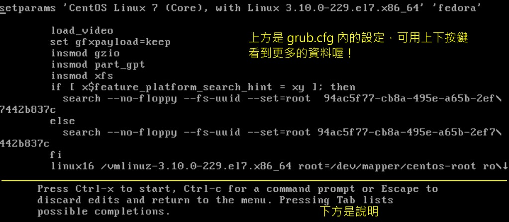

19.3 Boot Loader: Grub2
在看完了前面的整个开机流程，以及核心模块的整理之后，你应该会发现到一件事情，那就是“ boot loader 是载入核心的重要工具”啊！没有 boot loader 的话，那么 kernel 根本就没有办法被系统载入的呢！所以，下面我们会先谈一谈 boot loader 的功能，然后再讲一讲现阶段 Linux 里头最主流的 grub2 这个 boot loader 吧！
另外，你也得要知道，目前新版的 CentOS 7.x 已经将沿用多年的 grub 换成了 grub2 了！这个 grub2 版本在设置与安装上面跟之前的 grub 有点不那么相同， 所以，在后续的章节中，得要了解一下新的 grub2 的设置方式才行喔！如果你是新接触者，那没关系～直接看就 OK 了！
19.3.1 boot loader 的两个 stage
我们在第一小节开机流程的地方曾经讲过，在 BIOS 读完信息后，接下来就是会到第一个开机设备的 MBR 去读取 boot loader 了。这个 boot loader 可以具有菜单功能、直接载入核心文件以及控制权移交的功能等， 系统必须要有 loader 才有办法载入该操作系统的核心就是了。但是我们都知道， MBR 是整个硬盘的第一个 sector 内的一个区块，充其量整个大小也才 446 Bytes 而已。即使是 GPT 也没有很大的扇区来储存 loader 的数据。 我们的 loader 功能这么强，光是程序码与设置数据不可能只占这么一点点的容量吧？那如何安装？
为了解决这个问题，所以 Linux 将 boot loader 的程序码执行与设置值载入分成两个阶段 （stage） 来执行：
Stage 1：执行 boot loader 主程序： 第一阶段为执行 boot loader 的主程序，这个主程序必须要被安装在开机区，亦即是 MBR 或者是 boot sector 。但如前所述，因为 MBR 实在太小了，所以，MBR 或 boot sector 通常仅安装 boot loader 的最小主程序， 并没有安装 loader 的相关配置文件；
Stage 2：主程序载入配置文件： 第二阶段为通过 boot loader 载入所有配置文件与相关的环境参数文件 （包括文件系统定义与主要配置文件 grub.cfg）， 一般来说，配置文件都在 /boot 下面。
那么这些配置文件是放在哪里啊？这些与 grub2 有关的文件都放置到 /boot/grub2 中，那我们就来看看有哪些文件吧！
[root@study ~]# ls -l /boot/grub2
-rw-r--r--. device.map <==grub2 的设备对应档（下面会谈到）
drwxr-xr-x. fonts <==开机过程中的画面会使用到的字体数据
-rw-r--r--. grub.cfg <==grub2 的主配置文件！相当重要！
-rw-r--r--. grubenv <==一些环境区块的符号
drwxr-xr-x. i386-pc <==针对一般 x86 PC 所需要的 grub2 的相关模块
drwxr-xr-x. locale <==就是语系相关的数据啰
drwxr-xr-x. themes <==一些开机主题画面数据
[root@study ~]# ls -l /boot/grub2/i386-pc
-rw-r--r--. acpi.mod <==电源管理有关的模块
-rw-r--r--. ata.mod <==磁盘有关的模块
-rw-r--r--. chain.mod <==进行 loader 控制权移交的相关模块
-rw-r--r--. command.lst <==一些指令相关性的列表
-rw-r--r--. efiemu32.o <==下面几个则是与 uefi BIOS 相关的模块
-rw-r--r--. efiemu64.o
-rw-r--r--. efiemu.mod
-rw-r--r--. ext2.mod <==EXT 文件系统家族相关模块
-rw-r--r--. fat.mod <==FAT 文件系统模块
-rw-r--r--. gcry_sha256.mod <==常见的加密模块
-rw-r--r--. gcry_sha512.mod
-rw-r--r--. iso9660.mod <==光盘文件系统模块
-rw-r--r--. lvm.mod <==LVM 文件系统模块
-rw-r--r--. mdraid09.mod <==软件磁盘阵列模块
-rw-r--r--. minix.mod <==MINIX 相关文件系统模块
-rw-r--r--. msdospart.mod <==一般 MBR 分区表
-rw-r--r--. part_gpt.mod <==GPT 分区表
-rw-r--r--. part_msdos.mod <==MBR 分区表
-rw-r--r--. scsi.mod <==SCSI 相关模块
-rw-r--r--. usb_keyboard.mod <==下面两个为 USB 相关模块
-rw-r--r--. usb.mod
-rw-r--r--. vga.mod <==VGA 显卡相关模块
-rw-r--r--. xfs.mod <==XFS 文件系统模块
# 鸟哥这里只拿一些模块作说明，没有全部的文件都列上来喔！
从上面的说明你可以知道 /boot/grub2/ 目录下最重要的就是配置文件 （grub2.cfg） 以及各种文件系统的定义！ 我们的 loader 读取了这种文件系统定义数据后，就能够认识文件系统并读取在该文件系统内的核心文件啰。
所以从上面的文件来看， grub2 认识的文件系统与磁盘分区格式真的非常多喔！正因为如此，所以 grub2 才会取代 Lilo / grub 这个老牌的 boot loader 嘛！好了，接下来就来瞧瞧配置文件内有啥设置值吧！
19.3.2 grub2 的配置文件 /boot/grub2/grub.cfg 初探
grub2 的优点挺多的，包括有：
- 认识与支持较多的文件系统，并且可以使用 grub2 的主程序直接在文件系统中搜寻核心文件名；
- 开机的时候，可以“自行编辑与修改开机设置项目”，类似 bash 的指令模式；
- 可以动态搜寻配置文件，而不需要在修改配置文件后重新安装 grub2 。亦即是我们只要修改完 /boot/grub2/grub.cfg 里头的设置后，下次开机就生效了！
上面第三点其实就是 Stage 1, Stage 2 分别安装在 MBR （主程序） 与文件系统当中 （配置文件与定义文件） 的原因啦！ 好了，接下来，让我们好好了解一下 grub2 的配置文件： /boot/grub2/grub.cfg 这玩意儿吧！
- 磁盘与分区在 grub2 中的代号
安装在 MBR 的 grub2 主程序，最重要的任务之一就是从磁盘当中载入核心文件， 以让核心能够顺利的驱动整个系统的硬件。所以啰， grub2 必须要认识硬盘才行啊！那么 grub2 到底是如何认识硬盘的呢？ 嘿嘿！ grub2 对硬盘的代号设置与传统的 Linux 磁盘代号可完全是不同的！grub2 对硬盘的识别使用的是如下的代号：
（hd0,1） # 一般的默认语法，由 grub2 自动判断分区格式
（hd0,msdos1） # 此磁盘的分区为传统的 MBR 模式
（hd0,gpt1） # 此磁盘的分区为 GPT 模式
够神了吧？跟 /dev/sda1 风马牛不相干～怎么办啊？其实只要注意几个东西即可，那就是：
- 硬盘代号以小括号 （ ） 包起来；
- 硬盘以 hd 表示，后面会接一组数字；
- 以“搜寻顺序”做为硬盘的编号！（这个重要！）
- 第一个搜寻到的硬盘为 0 号，第二个为 1 号，以此类推；
- 每颗硬盘的第一个 partition 代号为 1 ，依序类推。
所以说，第一颗“搜寻到的硬盘”代号为：“（hd0）”，而该颗硬盘的第一号分区为“（hd0,1）”，这样说了解了吧？ 另外，为了区分不同的分区格式，因此磁盘后面的分区号码可以使用类似 msdos1 与 gpt1 的方式来调整！ 最终要记得的是，磁盘的号码是由 0 开始编号，分区的号码则与 Linux 一样，是由 1 号开始编号！两者不同喔！

Tips 跟旧版的 grub 有点不一样，因为旧版的 grub 不论磁盘还是分区的起始号码都是 0 号，而 grub2 在分区的部份是以 1 号开始编喔！ 此外，由于 BIOS 可以调整磁盘的开机顺序，因此上述的磁盘对应的 （hdN） 那个号码 N 是可能会变动的喔！这要先有概念才行！
所以说，整个硬盘代号为：
| 硬盘搜寻顺序 | 在 Grub2 当中的代号 |
|---|---|
| 第一颗（MBR） | （hd0） （hd0,msdos1） （hd0,msdos2） （hd0,msdos3）.... |
| 第二颗（GPT） | （hd1） （hd1,gpt1） （hd1,gpt2） （hd1,gpt3）.... |
| 第三颗 | （hd2） （hd2,1） （hd2,2） （hd2,3）.... |
这样应该比较好看出来了吧？第一颗硬盘的 MBR 安装处的硬盘代号就是“（hd0）”， 而第一颗硬盘的第一个分区的 boot sector 代号就是“（hd0,msdos1）”第一颗硬盘的第一个逻辑分区的 boot sector 代号为“（hd0,msdos5）”瞭了吧！
例题：假设你的系统仅有一颗 SATA 硬盘，请说明该硬盘的第一个逻辑分区在 Linux 与 grub2 当中的文件名与代号：答：因为是 SATA 磁盘，加上使用逻辑分区，因此 Linux 当中的文件名为 /dev/sda5 才对 （1~4 保留给 primary 与 extended 使用）。 至于 grub2 当中的磁盘代号则由于仅有一颗磁盘，因此代号会是“ （hd0,msdos5） ”或简易的写法“ （hd0,5） ”才对。
- /boot/grub2/grub.cfg 配置文件（重点在了解，不要随便改！）：
了解了 grub2 当中最麻烦的硬盘代号后，接下来，我们就可以瞧一瞧配置文件的内容了。先看一下鸟哥的 CentOS 内的 /boot/grub2/grub.cfg 好了：
[root@study ~]# vim /boot/grub2/grub.cfg
# 开始是 /etc/grub.d/00_header 这个脚本执行的结果展示，主要与基础设置与环境有关
### BEGIN /etc/grub.d/00_header ###
set pager=1
if [ -s $prefix/grubenv ]; then
load_env
fi
.....（中间省略）.....
if [ x$feature_timeout_style = xy ] ; then
set timeout_style=menu
set timeout=5
# Fallback normal timeout code in case the timeout_style feature is
# unavailable.
else
set timeout=5
fi
### END /etc/grub.d/00_header ###
# 开始执行 /etc/grub.d/10_linux，主要针对实际的 Linux 核心文件的开机环境
### BEGIN /etc/grub.d/10_linux ###
menuentry 'CentOS Linux 7 （Core）, with Linux 3.10.0-229.el7.x86_64' --class rhel fedora \
--class gnu-linux --class gnu --class os --unrestricted $menuentry_id_option \
'gnulinux-3.10.0-229.el7.x86_64-advanced-299bdc5b-de6d-486a-a0d2-375402aaab27' {
load_video
set gfxpayload=keep
insmod gzio
insmod part_gpt
insmod xfs
set root='hd0,gpt2'
if [ x$feature_platform_search_hint = xy ]; then
search --no-floppy --fs-uuid --set=root --hint='hd0,gpt2' 94ac5f77-cb8a-495e-a65b-...
else
search --no-floppy --fs-uuid --set=root 94ac5f77-cb8a-495e-a65b-2ef7442b837c
fi
linux16 /vmlinuz-3.10.0-229.el7.x86_64 root=/dev/mapper/centos-root ro \
rd.lvm.lv=centos/root rd.lvm.lv=centos/swap crashkernel=auto rhgb quiet \
LANG=zh_TW.UTF-8
initrd16 /initramfs-3.10.0-229.el7.x86_64.img
}
### END /etc/grub.d/10_linux ###
.....（中间省略）.....
### BEGIN /etc/grub.d/30_os-prober ###
### END /etc/grub.d/30_os-prober ###
### BEGIN /etc/grub.d/40_custom ###
### END /etc/grub.d/40_custom ###
.....（下面省略）.....
基本上，grub2 不希望你自己修改 grub.cfg 这个配置文件，取而代之的是修改几个特定的配置文件之后，由 grub2-mkconfig 这个指令来产生新的 grub.cfg 文件。 不过，你还是得要了解一下 grub2.cfg 的大致内容。
在 grub.cfg 最开始的部份，其实大多是环境设置与默认值设置等，比较重要的当然是默认由哪个选项开机 （set default） 以及默认的秒数 （set timeout）， 再来则是每一个菜单的设置，就是在“ menuentry ”这个设置值之后的项目啰！在鸟哥默认的配置文件当中，其实是有两个 menuentry 的， 也就是说，鸟哥的测试机在开机的时候应该就会有两个可以选择的菜单的意思啰！
在 menuentry 之后会有几个项目的规范，包括“ --class, --unrestricted --id ”等等的指定项目，之后通过“ { } ”将这个菜单会用到的数据框起来， 在选择这个菜单之后就会进行括号内的动作的意思。如果真的点选了这个菜单，那 grub2 首先会载入模块，例如上表中的“ load_video, insmod gzio, insmod part_gpt, insmod xfs ”等等的项目， 都是在载入要读取核心文件所需要的磁盘、分区、文件系统、解压缩等等的驱动程序。之后就是三个比较重要的项目：
set root='hd0,gpt2' 这 root 是指定 grub2 配置文件所在的那个设备。以我们的测试机来说，当初安装的时候分区出 / 与 /boot 两个设备唷，而 grub2 是在 /boot/grub2 这个位置上， 而这个位置的磁盘文件名为 /dev/vda2 ，因此完整的 grub2 磁盘名称就是 （hd0,2） 啰！因为我们的系统用的是 GTP 的磁盘分区格式， 因此全名就是“ hd0,gpt2 ”！这样说，有没有听懂啊？
linux16 /vmlinuz-... root=/dev/mapper/centos-root ... 这个就是 Linux 核心文件以及核心执行时所下达的参数。你应该会觉得比较怪的是，我们的核心文件不是 /boot/vmlinuz-xxx 吗？ 怎么这里的设置会是在根目录呢？这个跟上面的 root 有关啦！大部分的系统大多有 /boot 这个分区，如果 /boot 没有分区， 那会是怎么回事呢？我们用下面的叠代来说明一下：
- 如果没有 /boot 分区，仅有 / 分区：所以文件名会这样变化喔： /boot/vmlinuz-xxx --> （/）/boot/vmlinuz-xxx --> （hd0,msdos1）/boot/vmlinuz-xxx
- 如果 /boot 是独立分区，则文件名的变化会是这样： /boot/vmlinuz-xxx --> （/boot）/vmlinuz-xxx --> （hd0,msdos1）/vmlinuz-xxx因此，这个 linux16 后面接的文件名得要跟上面的 root 搭配在一起，才是完整的绝对路径文件名喔！看懂了吗？至于 linux16 /vmlinuz-xxx root=/file/name 那个 root 指的是“ linux 文件系统中，根目录是在哪个设备上”的意思！从本章一开始的开机流程中，我们就知道核心会主动去挂载根目录，并且从根目录中读取配置文件， 再进一步开始开机流程。所以，核心文件后面一定要接根目录的设备啊！这样理解吧？我们从 /etc/fstab 里面也知道根目录的挂载可以是设备文件名、 UUID 与 LABEL 名称，因此这个 root 后面也是可以带入类似 root=UUID=1111.2222.33... 之类的模式喔！
initrd16 /initramfs-3.10... 这个就是 initramfs 所在的文件名，跟 linux16 那个 vmlinuz-xxx 相同，这个文件名也是需要搭配“ set root=xxx ”那个项目的设备， 才会得到正确的位置喔！注意注意！
19.3.3 grub2 配置文件维护 /etc/default/grub 与 /etc/grub.d
前一个小节我们谈到的是 grub2 的主配置文件 grub.cfg 约略的内容，但是因为该文件的内容太过复杂，数据量非常庞大，grub2 官方说明不建议我们手动修改！ 而是应该要通过 /etc/default/grub 这个主要环境配置文件与 /etc/grub.d/ 目录内的相关配置文件来处理比较妥当！ 我们先来聊聊 /etc/default/grub 这个主要环境配置文件好了！
- /etc/default/grub 主要环境配置文件
这个主配置文件的内容大概是长这样：
[root@study ~]# cat /etc/default/grub
GRUB_TIMEOUT=5 # 指定默认倒数读秒的秒数
GRUB_DEFAULT=saved # 指定默认由哪一个菜单来开机，默认开机菜单之意
GRUB_DISABLE_SUBMENU=true # 是否要隐藏次菜单，通常是藏起来的好！
GRUB_TERMINAL_OUTPUT="console" # 指定数据输出的终端机格式，默认是通过文字终端机
GRUB_CMDLINE_LINUX="rd.lvm.lv=centos/root rd.lvm.lv=centos/swap crashkernel=auto rhgb quiet"
# 就是在 menuentry 括号内的 linux16 项目后续的核心参数
GRUB_DISABLE_RECOVERY="true" # 取消救援菜单的制作
有兴趣的伙伴请自行 info grub 并且找到 6.1 的章节阅读一下～我们下面主要谈的是几个重要的设置项目而已。现在来说说处理的项目重点吧！
- 倒数时间参数： GRUB_TIMEOUT
这个设置值相当简单，后面就是接你要倒数的秒数即可～例如要等待 30 秒，就在这边改成“GRUB_TIMEOUT=30”即可！如果不想等待则输入 0 ， 如果一定要使用者选择，则填 -1 即可！
- 是否隐藏菜单项目：GRUB_TIMEOUT_STYLE
这个项目可选择的设置值有 menu, countdown, hidden 等等。如果没有设置，默认是 menu 的意思。这个项目主要是在设置要不要显示菜单！ 如果你不想要让使用者看到菜单，这里可以设置为 countdown！那 countdown 与 hidden 有啥差异呢？countdown 会在屏幕上显示剩余的等待秒数， 而 hidden 则空空如也～除非你有特定的需求，否则这里一般鸟哥建议设置为 menu 较佳啦！
- 讯息输出的终端机模式：GRUB_TERMINAL_OUTPUT
这个项目是指定输出的画面应该使用哪一个终端机来显示的意思，主要的设置值有“ console, serial, gfxterm, vga_text ”等等。 除非有特别的需求，否则一般使用 console 即可！
- 默认开机菜单项目：GRUB_DEFAULT
这个项目在指定要用哪一个菜单 （menuentry） 来作为默认开机项目的意思。能使用的设置值包括有“ saved, 数字, title 名, ID 名”等等。 假设你有三笔 menuentry 的项目大约像这样：
menuentry '1st linux system' --id 1st-linux-system { ...}
menuentry '2nd linux system' --id 2nd-linux-system { ...}
menuentry '3rd win system' --id 3rd-win-system { ...}
几个常见的设置值是这样的：
[root@study ~]#
GRUB_DEFAULT=1
代表使用第二个 menuentry 开机，因为数字的编号是以 0 号开始编的！
GRUB_DEFAULT=3rd-win-system
代表使用第三个 menuentry 开机，因为里头代表的是 ID 的项目！它会找到 --id 喔！
GRUB_DEFAULT=saved
代表使用 grub2-set-default 来设置哪一个 menuentry 为默认值的意思。通常默认为 0
一般来说，默认就是以第一个开机菜单来作为默认项目，如果想要有不同的菜单设置，可以在这个项目填选所需要的 --id 即可。 当然啦，你的 id 就应该不要重复啰！
- 核心的外加参数功能：GRUB_CMDLINE_LINUX
如果你的核心在启动的时候还需要加入额外的参数，就在这里加入吧！举例来说，如果你除了默认的核心参数之外，还需要让你的磁盘读写机制为 deadline 这个机制时， 可以这样处理：
GRUB_CMDLINE_LINUX="..... crashkernel=auto rhgb quiet elevator=deadline"
在暨有的项目之后加上如同上表的设置，这样就可以在开机时额外的加入磁盘读写的机制项目设置了！
这个主要环境配置文件编写完毕之后，必须要使用 grub2-mkconfig 来重建 grub.cfg 才行喔！因为主配置文件就是 grub.cfg 而已， 我们是通过许多脚本的协力来完成 grub.cfg 的自动创建。当然啰，额外自己设置的项目，就是写入 /etc/default/grub 文件内就是了。 我们来测试一下下面调整项目，看看你会不会修订主要环境配置文件了呢？
问：假设你需要 （1）开机菜单等待 40 秒钟、 （2）默认用第一个菜单开机、 （3）菜单请显示出来不要隐藏、 （4）核心外带“elevator=deadline”的参数值， 那应该要如何处理 grub.cfg 呢？答：直接编辑主要环境配置文件后，再以 grub2-mkconfig 来重建 grub.cfg 喔！
# 1\. 先编辑主要环境配置文件：
[root@study ~]# vim /etc/default/grub
GRUB_TIMEOUT=40
GRUB_DEFAULT=0
GRUB_TIMEOUT_STYLE=menu
GRUB_DISABLE_SUBMENU=true
GRUB_TERMINAL_OUTPUT="console"
GRUB_CMDLINE_LINUX="rd.lvm.lv=centos/root rd.lvm.lv=centos/swap crashkernel=auto rhgb
quiet elevator=deadline"
GRUB_DISABLE_RECOVERY="true"
# 2\. 开始重新创建 grub.cfg ！
[root@study ~]# grub2-mkconfig -o /boot/grub2/grub.cfg
Generating grub configuration file ...
Found linux image: /boot/vmlinuz-3.10.0-229.el7.x86_64
Found initrd image: /boot/initramfs-3.10.0-229.el7.x86_64.img
Found linux image: /boot/vmlinuz-0-rescue-309eb890d09f440681f596543d95ec7a
Found initrd image: /boot/initramfs-0-rescue-309eb890d09f440681f596543d95ec7a.img
done
# 3\. 检查看看 grub.cfg 的内容是否真的是改变了？
[root@study ~]# grep timeout /boot/grub2/grub.cfg
set timeout_style=menu
set timeout=40
[root@study ~]# grep default /boot/grub2/grub.cfg
set default="0"
[root@study ~]# grep linux16 /boot/grub2/grub.cfg
linux16 /vmlinuz-3.10.0-229.el7.x86_64 root=/dev/.... elevator=deadline
linux16 /vmlinuz-0-rescue-309eb890d09f440681f5965.... elevator=deadline
- 菜单创建的脚本 /etc/grub.d/*
你应该会觉得很奇怪， grub2-mkconfig 执行之后，屏幕怎么会主动的去抓到 linux 的核心，还能够找到对应核心版本的 initramfs 呢？ 怎么这么厉害？其实 grub2-mkconfig 会去分析 /etc/grub.d/ 里面的文件，然后执行该文件来创建 grub.cfg 的啦！ 所以啰， /etc/grub.d/ 里面的文件就显得很重要了。一般来说，该目录下会有这些文件存在：
00_header：主要在创建初始的显示项目，包括需要载入的模块分析、屏幕终端机的格式、倒数秒数、菜单是否需要隐藏等等，大部分在 /etc/default/grub 里面所设置的变量，大概都会在这个脚本当中被利用来重建 grub.cfg 。
10_linux：根据分析 /boot 下面的文件，尝试找到正确的 linux 核心与读取这个核心需要的文件系统模块与参数等，都在这个脚本运行后找到并设置到 grub.cfg 当中。 因为这个脚本会将所有在 /boot 下面的每一个核心文件都对应到一个菜单，因此核心文件数量越多，你的开机菜单项目就越多了。 如果未来你不想要旧的核心出现在菜单上，那可以通过移除旧核心来处理即可。
30_os-prober：这个脚本默认会到系统上找其他的 partition 里面可能含有的操作系统，然后将该操作系统做成菜单来处理就是了。 如果你不想要让其他的操作系统被侦测到并拿来开机，那可以在 /etc/default/grub 里面加上“ GRUB_DISABLE_OS_PROBER=true ”取消这个文件的运行。
40_custom：如果你还有其他想要自己手动加上去的菜单项目，或者是其他的需求，那么建议在这里补充即可！
所以，一般来说，我们会更动到的就是仅有 40_custom 这个文件即可。那这个文件内容也大多在放置管理员自己想要加进来的菜单项目就是了。 好了，那问题来了，我们知道 menuentry 就是一个菜单，那后续的项目有哪些东西呢？简单的说，就是这个 menuentry 有几种常见的设置？ 亦即是 menuentry 的功能啦！常见的有这几样：
- 直接指定核心开机
基本上如果是 Linux 的核心要直接被用来开机，那么你应该要通过 grub2-mkconfig 去抓 10_linux 这个脚本直接制作即可，因此这个部份你不太需要记忆！ 因为在 grub.cfg 当中就已经是系统能够捉到的正确的核心开机菜单了！不过如果你有比较特别的参数需要进行呢？这时候你可以这样作： （1）先到 grub.cfg 当中取得你要制作的那个核心的菜单项目，然后将它复制到 40_custom 当中 （2）再到 40_custom 当中依据你的需求修改即可。
这么说或许你很纳闷，我们来做个实际练习好了：
问：如果你想要使用第一个原有的 menuentry 取出来后，增加一个菜单，该菜单可以强制 systemd 使用 graphical.target 来启动 Linux 系统， 让该菜单一定可以使用图形界面而不用理会 default.target 的链接，该如何设计？答：当核心外带参数中，有个“ systemd.unit=??? ”的外带参数可以指定特定的 target 开机！因此我们先到 grub.cfg 当中，去复制第一个 menuentry ， 然后进行如下的设置：
[root@study ~]# vim /etc/grub.d/40_custom
menuentry 'My graphical CentOS, with Linux 3.10.0-229.el7.x86_64' --class rhel fedora
--class gnu-linux --class gnu --class os --unrestricted --id 'mygraphical' {
load_video
set gfxpayload=keep
insmod gzio
insmod part_gpt
insmod xfs
set root='hd0,gpt2'
if [ x$feature_platform_search_hint = xy ]; then
search --no-floppy --fs-uuid --set=root --hint='hd0,gpt2' 94ac5f77-cb8a-495e-a65b-...
else
search --no-floppy --fs-uuid --set=root 94ac5f77-cb8a-495e-a65b-2ef7442b837c
fi
linux16 /vmlinuz-3.10.0-229.el7.x86_64 root=/dev/mapper/centos-root ro rd.lvm.lv=
centos/root rd.lvm.lv=centos/swap crashkernel=auto rhgb quiet
elevator=deadline systemd.unit=graphical.target
initrd16 /initramfs-3.10.0-229.el7.x86_64.img
}
# 请注意，上面的数据都是从 grub.cfg 里面复制过来的，增加的项目仅有特殊字体的部份而已！
# 同时考虑画面宽度，该项目稍微被变动过，请依据您的环境来设置喔！
[root@study ~]# grub2-mkconfig -o /boot/grub2/grub.cfg
当你再次 reboot 时，系统就会多出一个菜单给你选择了！而且选择该菜单之后，你的系统就可以直接进入图形界面 （如果有安装相关的 X window 软件时）， 而不必考虑 default.target 是啥东西了！了解乎？
- 通过 chainloader 的方式移交 loader 控制权
所谓的 chain loader （开机管理程序的链结） 仅是在将控制权交给下一个 boot loader 而已， 所以 grub2 并不需要认识与找出 kernel 的文件名 ，“ 他只是将 boot 的控制权交给下一个 boot sector 或 MBR 内的 boot loader 而已 ” 所以通常他也不需要去查验下一个 boot loader 的文件系统！
一般来说， chain loader 的设置只要两个就够了，一个是预计要前往的 boot sector 所在的分区代号， 另一个则是设置 chainloader 在那个分区的 boot sector （第一个扇区） 上！假设我的 Windows 分区在 /dev/sda1 ，且我又只有一颗硬盘，那么要 grub 将控制权交给 windows 的 loader 只要这样就够了：
menuentry "Windows" {
insmod chain # 你得要先载入 chainloader 的模块对吧？
insmod ntfs # 建议加入 windows 所在的文件系统模块较佳！
set root=（hd0,1） # 是在哪一个分区～最重要的项目！
chainloader +1 # 请去 boot sector 将 loader 软件读出来的意思！
}
通过这个项目我们就可以让 grub2 交出控制权了！
问：假设你的测试系统上面使用 MBR 分区，并且出现如下的数据：
[root@study ~]# fdisk -l /dev/vda
Device Boot Start End Blocks Id System
/dev/vda1 2048 10487807 5242880 83 Linux
/dev/vda2 * 10487808 178259967 83886080 7 HPFS/NTFS/exFAT
/dev/vda3 178259968 241174527 31457280 83 Linux
其中 /dev/vda2 使用是 windows 7 的操作系统。现在我需要增加两个开机选项，一个是取得 windows 7 的开机菜单，一个是回到 MBR 的默认环境，应该如何处理呢？答：windows 7 在 /dev/vda2 亦即是 hd0,msdos2 这个地方，而 MBR 则是 hd0 即可，不需要加上分区啊！因此整个设置会变这样：
[root@study ~]# vim /etc/grub.d/40_custom
menuentry 'Go to Windows 7' --id 'win7' {
insmod chain
insmod ntfs
set root=（hd0,msdos2）
chainloader +1
}
menuentry 'Go to MBR' --id 'mbr' {
insmod chain
set root=（hd0）
chainloader +1
}
[root@study ~]# grub2-mkconfig -o /boot/grub2/grub.cfg
另外，如果每次都想要让 windows 变成默认的开机选项，那么在 /etc/default/grub 当中设置好“ GRUB_DEFAULT=win7 ” 然后再次 grub2-mkconfig 这样即可啦！不要去算 menuentry 的顺序喔！通过 --id 内容来处理即可！
19.3.4 initramfs 的重要性与创建新 initramfs 文件
我们在本章稍早之前“ boot loader 与 kernel 载入”的地方已经提到过 initramfs 这玩意儿，他的目的在于提供开机过程中所需要的最重要核心模块，以让系统开机过程可以顺利完成。 会需要 initramfs 的原因，是因为核心模块放置于 /lib/modules/$（uname -r）/kernel/ 当中， 这些模块必须要根目录 （/） 被挂载时才能够被读取。但是如果核心本身不具备磁盘的驱动程序时， 当然无法挂载根目录，也就没有办法取得驱动程序，因此造成两难的地步。
initramfs 可以将 /lib/modules/.... 内的“开机过程当中一定需要的模块”包成一个文件 （文件名就是 initramfs）， 然后在开机时通过主机的 INT 13 硬件功能将该文件读出来解压缩，并且 initramfs 在内存内会仿真成为根目录， 由于此虚拟文件系统 （Initial RAM Disk） 主要包含磁盘与文件系统的模块，因此我们的核心最后就能够认识实际的磁盘， 那就能够进行实际根目录的挂载啦！所以说：“initramfs 内所包含的模块大多是与开机过程有关，而主要以文件系统及硬盘模块 （如 usb, SCSI 等） 为主”的啦！
一般来说，需要 initramfs 的时刻为：
- 根目录所在磁盘为 SATA、USB 或 SCSI 等连接接口；
- 根目录所在文件系统为 LVM, RAID 等特殊格式；
- 根目录所在文件系统为非传统 Linux 认识的文件系统时；
- 其他必须要在核心载入时提供的模块。
Tips 之前鸟哥忽略 initrd 这个文件的重要性，是因为鸟哥很穷... ^_^。因为鸟哥的 Linux 主机都是较早期的硬件， 使用的是 IDE 接口的硬盘，而且并没有使用 LVM 等特殊格式的文件系统，而 Linux 核心本身就认识 IDE 接口的磁盘， 因此不需要 initramfs 也可以顺利开机完成的。自从 SATA 硬盘流行起来后，没有 initramfs 就没办法开机了！ 因为 SATA 硬盘使用的是 SCSI 模块来驱动的，而 Linux 默认将 SCSI 功能编译成为模块....
一般来说，各 distribution 提供的核心都会附上 initramfs 文件，但如果你有特殊需要所以想重制 initramfs 文件的话， 可以使用 dracut / mkinitrd 来处理的。这个文件的处理方式很简单， man dracut 或 man mkinitrd 就知道了！ ^_^。 CentOS 7 应该要使用 dracut 才对，不过 mkinitrd 还是有保留下来，两者随便你玩！鸟哥这里主要是介绍 dracut 就是了！
[root@study ~]# dracut [-fv] [--add-drivers 列表] initramfs文件名 核心版本
选项与参数：
-f ：强迫编译出 initramfs ，如果 initramfs 文件已经存在，则覆盖掉旧文件
-f ：显示 dracut 的运行过程
--add-drivers 列表：在原本的默认核心模块中，增加某些你想要的模块！模块位于核心所在目录
/lib/modules/$（uname -r）/kernel/*
initramfs文件名 ：就是你需要的文件名！开头最好就是 initramfs，后面接版本与功能
核心版本 ：默认当然是目前运行中的核心版本，不过你也可以手动输入其他不同版本！
其实 dracut 还有很多功能，例如下面的几个参数也可以参考看看：
--modules ：将 dracut 所提供的开机所需模块 （核心核模块） 载入，可用模块在下面的目录内
/usr/lib/dracut/modules.d/
--gzip|--bzip2|--xz：尝试使用哪一种压缩方式来进行 initramfs 压缩。默认使用 gzip 喔！
--filesystems ：加入某些额外的文件系统支持！
范例一：以 dracut 的默认功能创建一个 initramfs 虚拟磁盘文件
[root@study ~]# dracut -v initramfs-test.img $（uname -r）
Executing: /sbin/dracut -v initramfs-test.img 3.10.0-229.el7.x86_64
*** Including module: bash *** # 先载入 dracut 本身的模块支持
*** Including module: nss-softokn ***
*** Including modules done ***
.....（中间省略）..... # 下面两行在处理核心模块
*** Installing kernel module dependencies and firmware ***
*** Installing kernel module dependencies and firmware done ***
.....（中间省略）.....
*** Generating early-microcode cpio image *** # 创建微指令集
*** Constructing GenuineIntel.bin ****
*** Store current command line parameters ***
*** Creating image file *** # 开始创建 initramfs 啰！
*** Creating image file done ***
范例二：额外加入 e1000e 网卡驱动与 ext4/nfs 文件系统在新的 initramfs 内
[root@study ~]# dracut -v --add-drivers "e1000e" --filesystems "ext4 nfs" \
> initramfs-new.img $（uname -r）
[root@study ~]# lsinitrd initramfs-new.img | grep -E '（e1000|ext4|nfs）'
usr/lib/modules/3.10.0-229.el7.x86_64/kernel/drivers/net/ethernet/intel/e1000e
usr/lib/modules/3.10.0-229.el7.x86_64/kernel/drivers/net/ethernet/intel/e1000e/e1000e.ko
usr/lib/modules/3.10.0-229.el7.x86_64/kernel/fs/ext4
usr/lib/modules/3.10.0-229.el7.x86_64/kernel/fs/ext4/ext4.ko
usr/lib/modules/3.10.0-229.el7.x86_64/kernel/fs/nfs
usr/lib/modules/3.10.0-229.el7.x86_64/kernel/fs/nfs/nfs.ko
# 你可以看得到，新增的模块现在正在新的 initramfs 当中了呢！很愉快喔！
initramfs 创建完成之后，同时核心也处理完毕后，我们就可以使用 grub2 来创建菜单了！下面继续瞧一瞧吧！
19.3.5 测试与安装 grub2
如果你的 Linux 主机本来就是使用 grub2 作为 loader 的话，那么你就不需要重新安装 grub2 了， 因为 grub2 本来就会主动去读取配置文件啊！您说是吧！但如果你的 Linux 原来使用的并非 grub2 ， 那么就需要来安装啦！如何安装呢？首先，你必须要使用 grub-install 将一些必要的文件复制到 /boot/grub2 里面去，你应该这样做的：
[root@study ~]# grub2-install [--boot-directory=DIR] INSTALL_DEVICE
选项与参数：
--boot-directory=DIR 那个 DIR 为实际的目录，使用 grub2-install 默认会将
grub2 所有的文件都复制到 /boot/grub2/* ，如果想要复制到其他目录与设备去，
就得要用这个参数。
INSTALL_DEVICE 安装的设备代号啦！
范例一：将 grub2 安装在目前系统的 MBR 下面，我的系统为 /dev/vda：
[root@study ~]# grub2-install /dev/vda
# 因为原本 /dev/vda 就是使用 grub2 ，所以似乎不会出现什么特别的讯息。
# 如果去查阅一下 /boot/grub2 的内容，会发现所有的文件都更新了，因为我们重装了！
# 但是注意到，我们并没有配置文件喔！那要自己创建！
基本上，grub2-install 大概仅能安装 grub2 主程序与相关软件到 /boot/grub2/ 那个目录去，如果后面的设备填的是整个系统 （/dev/vda, /dev/sda...）， 那 loader 的程序才会写入到 MBR 里面去。如果是 XFS 文件系统的 /dev/vda2 设备的话 （个别 partition），那 grub2-install 就会告诉你， 该文件系统并不支持 grub2 的安装喔！也就是你不能用 grub2-install 将你的主程序写入到 boot sector 里头去的意思啦！ 那怎办？没关系，来强迫写入一下看看！
# 尝试看一下你的系统中有没有其他的 xfs 文件系统，且为传统的 partition 类型？
[root@study ~]# df -T |grep -i xfs
/dev/mapper/centos-root xfs 10475520 4128728 6346792 40% /
/dev/mapper/centos-home xfs 5232640 665544 4567096 13% /home
/dev/mapper/raidvg-raidlv xfs 1558528 33056 1525472 3% /srv/raidlvm
/dev/vda2 xfs 1038336 144152 894184 14% /boot
/dev/vda4 xfs 1038336 63088 975248 7% /srv/myproject
# 看起来仅有 /dev/vda4 比较适合做个练习的模样了！来瞧瞧先！
# 将 grub2 的主程序安装到 /dev/vda4 去看看！
[root@study ~]# grub2-install /dev/vda4
Installing for i386-pc platform.
grub2-install: error: hostdisk//dev/vda appears to contain a xfs filesystem which isn't
known to reserve space for DOS-style boot. Installing GRUB there could result in
FILESYSTEM DESTRUCTION if valuable data is overwritten by grub-setup （--skip-fs-probe
disables this check, use at your own risk）.
# 说是 xfs 恐怕不能支持你的 boot sector 概念！这个应该是误判！所以我们还是给它强制装一下！
[root@study ~]# grub2-install --skip-fs-probe /dev/vda4
Installing for i386-pc platform.
grub2-install: warning: File system ‘xfs’ doesn't support embedding.
grub2-install: warning: Embedding is not possible. GRUB can only be installed in this
setup by using blocklists. However, blocklists are UNRELIABLE and their use is
discouraged..
grub2-install: error: will not proceed with blocklists.
# 还是失败！因为还是担心 xfs 被搞死～好！没问题！加个 --force 与 --recheck 重新处理一遍！
[root@study ~]# grub2-install --force --recheck --skip-fs-probe /dev/vda4
Installing for i386-pc platform.
grub2-install: warning: File system ‘xfs’ doesn't support embedding.
grub2-install: warning: Embedding is not possible. GRUB can only be installed in this
setup by using blocklists. However, blocklists are UNRELIABLE and their use is
discouraged..
Installation finished. No error reported.
# 注意看！原本是无法安装的错误，现在仅有 warning 警告讯息，所以这样就安装到 partition 上了！
上面这样就将 grub2 的主程序安装到 /dev/vda4 以及重新安装到 MBR 里面去了。现在来思考一下，我们知道 grub2 主程序会去找 grub.cfg 这个文件，大多是在 /boot/grub2/grub.cfg 里面，那有趣了，我们的 MBR 与 /dev/vda4 都是到 /boot/grub2/grub.cfg 去抓设置吗？ 如果是多重操作系统那怎办？呵呵！这就需要重新进入新系统才能够安装啦！举个例子来说啰：
问：假设你的测试系统上面使用 MBR 分区，并且出现如下的数据：
[root@study ~]# fdisk -l /dev/vda
Device Boot Start End Blocks Id System
/dev/vda1 2048 10487807 5242880 83 Linux
/dev/vda2 * 10487808 178259967 83886080 7 HPFS/NTFS/exFAT
/dev/vda3 178259968 241174527 31457280 83 Linux
其中 /dev/vda1, /dev/vda3 是两个 CentOS 7 系统，而 /dev/vda2 则是 windows 7 系统。安装的流程是依序 /dev/vda1 --> /dev/vda2 --> /dev/vda3。因此，安装好而且重新开机后，系统其实是默认进入 /dev/vda3 这个 CentOS 7 的系统的。 此时 MBR 会去读取的配置文件在 （/dev/vda3）/boot/grub2/grub.cfg 才对。
因为 /dev/vda1 应该是用来管理开机菜单的，而 /dev/vda2 及 /dev/vda3 在规划中就是用来让学生操作的，因此默认情况下， /dev/vda1 内的 CentOS 系统应该只会在开机的时候用到而已，或者是出问题时会找他来使用。至于 /dev/vda3 及 /dev/vda2 则可能因为学生的误用， 因此未来可能会升级或删除或重灌等。那你如何让系统永远都是使用 /dev/vda1 开机呢？答：因为 MBR 的 boot loader 应该要去 （/dev/vda1）/boot/grub2/grub.cfg 读取相关设置才是正常的！所以，你可以使用几种基本的方式来处理：
- 因为 CentOS 7 会主动找到其他操作系统，因此你可以在 /dev/vda3 的开机菜单中找到 /dev/vda1 的开机选项，请用该选项进入系统， 你就能够进入 /dev/vda1 了！
- 假设没能抓到 /dev/vda1 ，那你可以在 /dev/vda3 下面使用 chroot 来进入 /dev/vda1 喔！
- 使用救援光盘去抓到正确的 /dev/vda1，然后取得 /dev/vda1 的系统喔！
等到进入系统后，修改 /etc/default/grub 及 /etc/grub.d/40_custom 之后，使用 grub2-mkconfig -o /boot/grub2/grub.cfg ， 然后重新 grub2-install /dev/vda 就能够让你的 MBR 去取得 /dev/vda1 内的配置文件啰！
问：依据 19.3.3 小节的第一个练习，我们的测试机目前为 40 秒倒数，且有一个强制进入图形界面的“ My graphical CentOS7 ”菜单！ 现在我们想要多加两个菜单，一个是回到 MBR 的 chainloader，一个是使用 /dev/vda4 的 chainloader，该如何处理？答：因为没有必要重新安装 grub2 ，直接修改即可。修改 40_custom 成为这样：
[root@study ~]# vim /etc/grub.d/40_custom
# 最下面加入这两个项目即可！
menuentry 'Goto MBR' {
insmod chain
insmod part_gpt
set root=（hd0）
chainloader +1
}
menuentry 'Goto /dev/vda4' {
insmod chain
insmod part_gpt
set root=（hd0.gpt4）
chainloader +1
}
[root@study ~]# grub2-mkconfig -o /boot/grub2/grub.cfg
最后总结一下：
- 如果是从其他 boot loader 转成 grub2 时，得先使用 grub2-install 安装 grub2 配置文件；
- 承上，如果安装到 partition 时，可能需要加上额外的许多参数才能够顺利安装上去！
- 开始编辑 /etc/default/grub 及 /etc/grub.d/* 这几个重要的配置文件；
- 使用 grub2-mkconfig -o /boot/grub2/grub.cfg 来创建开机的配置文件！
19.3.6 开机前的额外功能修改
事实上，前几个小节设置好之后，你的 grub2 就已经在你的 Linux 系统上面了，而且同时存在于 MBR 与 boot sector 当中呢！所以，我们已经可以重新开机来查阅看看啦！ 另外，如果你正在进行开机，那么请注意，我们可以在默认菜单 （鸟哥的范例当中是 40 秒） 按下任意键， 还可以进行 grub2 的“线上编修”功能喔！真是棒啊！先来看看开机画面吧！
图19.3.1、grub2 开机画面示意图
由于默认菜单就没有隐藏，因此你会直接看到这 5 个菜单而已，同时会有读秒的咚咚在倒数。 菜单部分的画面其实就是 menuentry 后面的文字啦！你现在知道如何修改 menuentry 后面的文字了吧！ ^_^。 然后如果你点选了“Goto MBR”与“Goto /dev/vda4”时，怪了！怎么发现到菜单又重新回来了呢？ 这是因为这两个 Goto 的菜单都是重新读取主配置文件，而 MBR 与 /dev/vda4 配置文件的读取都是来自 （/dev/vda2）/boot/grub2/grub.cfg 的缘故！ 因此这个画面就会重复出现了！这样了解乎？
另外，如果你再仔细看的话，会发现到上图中底部还有一些细部的选项，似乎有个 'e' edit 的样子！ 没错～ grub2 支持线上编修指令喔！这是个很有用的功能！假如刚刚你将 grub.cfg 的内容写错了，导致出现无法开机的问题时， 我们可以查阅该 menuentry 菜单的内容并加以修改喔！举例来说，我想要知道第一个菜单的实际内容时，将反白光棒移动到第一个菜单， 再按下 'e' 会进入如下画面：
图19.3.2、grub2 额外的指令编辑模式
因为 CentOS 7 默认没有提供美美的底图给我们使用，因此这里会看到无法分辨的两个区块！事实上它真的是两个区块， 上方是实际你可以编辑的内容区段，仔细看，这不就是我们在 grub.cfg 里面设置的东西吗？没错！此时你还可以继续进一步修改喔！ 用上/下/左/右按键到你想要编辑的地方，直接删除、新增即可！
至于下方画面则仅是一些编辑说明，重点在告诉你，编辑完毕之后，若想要取消而回到前一个画面，请使用 [crtl]+c 或者是 [esc] 回去， 若是修改完毕，想要直接开机时，请使用 [crtl]+x 来开机啰！
问：现在我想要让系统开机的过程中，让这个系统进入救援模式 （rescue） ，而不想要进入系统后使用 systemctl rescue 时，该如何处理？答：仔细看到图 19.3.2 的画面，按下“向下”的方向键，直到出现 linux16 那一行，然后在那一行的最后面加上 systemd.unit=rescue.target ， 画面有点像这样：
 然后再按下 [crtl]+x 来进入系统，就能够取得 rescue 的环境了！登陆后有点像这样：
接着下来你就可以开始救援系统啰！
然后再按下 [crtl]+x 来进入系统，就能够取得 rescue 的环境了！登陆后有点像这样：
接着下来你就可以开始救援系统啰！
你可能会觉得很讶异！早期 SystemV 的系统中，进入 runlevel 1 的状态是不需要输入 root 密码的，在 systemd 的年代，哇！！ 竟然需要密码才能够进入救援模式耶！而且是强制要有 root 密码耶！如果你是 root 密码忘记要救援，救个鬼啊～还是需要 root 密码啊！ 那怎办？没关系～本章稍后会告诉你应该要如何处理的啦！
19.3.7 关于开机画面与终端机画面的图形显示方式
如果你想要让你的开机画面使用图形显示方式，例如使用中文来显示你的画面啊！因为我们默认的 locale 语系就是 zh_TW.utf8 嘛！ 所以理论上 grub2 会显是中文出来才对啊！有没有办法达成呢？是有的～通过图形显是的方法即可！不过， 我们得要重新修改 grub.cfg 才行喔！依据下面的方式来处理：
# 先改重要的配置文件
[root@study ~]# vim /etc/default/grub
.....（前面省略）.....
GRUB_TERMINAL=gfxterm # 设置主要的终端机显示为图形界面！
GRUB_GFXMODE=1024x768x24 # 图形界面的 X, Y, 彩度数据
GRUB_GFXPAYLOAD_LINUX=keep # 保留图形界面，不要使用 text 喔！
# 重新创建配置文件
[root@study ~]# grub2-mkconfig -o /boot/grub2/grub.cfg
再次的重新开机，这时你会看到有点像下面的模样的画面喔！
 图19.3.3、使用图形显示模式的开机画面
图19.3.3、使用图形显示模式的开机画面
看到没有？上图中有繁体中文喔！中文喔喔喔喔喔喔～真是开心啊！ 未来如果你有需要在你的开机菜单当中加入许多属于你自己的公司/企业的画面，那就太容易啰！ ^_^
19.3.8 为个别菜单加上密码
想像一个环境，如果你管理的是一间计算机教室，这间计算机教室因为可对外开放，但是你又担心某些 partition 被学生不小心的弄乱，因此你可能会想要将某些开机菜单作个保护。这个时候，为每个菜单作个加密的密码就是个可行的方案啦！
另外，从本章前面的 19.3.6 小节介绍的开机过程中，你会知道使用者可以在开机的过程中于 grub2 内选择进入某个菜单，以及进入 grub2 指令模式去修改菜单的参数数据等。 也就是说，主要的 grub2 控制有： （1）grub2 的菜单命令行修改与 （2）进入选择的菜单开机流程。好了，如刚刚谈到的计算机教室案例， 你要怎么让某些密码可以完整的掌控 grub2 的所有功能，某些密码则只能进入个别的菜单开机呢？这就得要牵涉到 grub2 的帐号机制了！
- grub2 的帐号、密码与菜单设置
grub2 有点在仿真 Linux 的帐号管理方案喔！因为在 grub2 的菜单管理中，有针对两种身份进行密码设置：
- superusers： 设置系统管理员与相关参数还有密码等，使用这个密码的用户，将可在 grub2 内具有所有修改的权限。 但一旦设置了这个 superusers 的参数，则所有的指令修改将会被变成受限制的！
- users： 设置一般帐号的相关参数与密码，可以设置多个用户喔！使用这个密码的用户可以选择要进入某些菜单项目。 不过，菜单项目也得要搭配相对的帐号才行喔！（一般来说，使用这种密码的帐号并不能修改菜单的内容，仅能选择进入菜单去开机而已）
这样说可能你不是很容易看得懂，我们使用下面的一个范例来说明你就知道怎么处理了。另外，下面的范例是单纯给读者们看看而已的～ 不能够直接用在我们的测试机器里面喔！
问：假设你的系统有三个各别的操作系统，分别安装在 （hd0,1）, （hd0,2）, （hd0,3） 当中。假设 （hd0,1） 是所有人都可以选择进入的系统， （hd0,2） 是只有系统管理员可以进入的系统，（hd0,3）则是另一个一般用户与系统管理员可以进入的系统。另外，假设系统管理员的帐号/密码设置为 vbird/abcd1234， 而一般帐号为 dmtsai/dcba4321 ，那该如何设置？答：如果依据上述的说明，其实没有用到 Linux 的 linux16 与 initrd16 的项目，只需要 chainloader 的项目而已！ 因此，整个 grub.cfg 会有点像下面这样喔：
# 第一个部份是先设置好管理员与一般帐号的帐号名称与密码项目！
set superusers="vbird" # 这里是设置系统管理员的帐号名称为啥的意思！
password vbird abcd1234 # 当然要给予这个帐号密码啊！
password dmtsai dcba4321 # 没有输入 superuses 的其他帐号，当然就是判定为一般帐号
menuentry "大家都可以选择我来开机喔！" --unrestricted {
set root=（hd0,1）
chainloader +1
}
menuentry "只有管理员的密码才有办法使用" --users "" {
set root=（hd0,2）
chainloader +1
}
menuentry "只有管理员与 dmtsai 才有办法使用喔！" --users dmtsai {
set root=（hd0,3）
chainloader +1
}
如上表所示，你得要使用 superuses 来指定哪个帐号是管理员！另外，这个帐号与 Linux 的实体帐号无关，这仅是用来判断密码所代表的意义而已。 而密码的给予有两种语法：
- password_pbkdf2 帐号 “使用grub2-mkpasswd-pbkdf2所产生的密码”
- password 帐号 “没加密的明码”
有了帐号与密码之后，在来就是在个别的菜单上面加上是否要取消限制 （--unrestricted） 或者是给予哪个用户 （--users） 的设置项目。 同时请注意喔，所有的系统管理员所属的密码应该是能够修改所有的菜单，因此你无须在第三个菜单上面加入 vbird 这个管理员帐号！ 这样说你就可以了解了吧？
你很可能会这样说：“了解个头啦！怎么可能会了解！前面不是才说过：「不要手动去修改 grub.cfg 」吗？这里怎么直接列出 grub.cfg 的内容？ 上面这些项目我是要在哪些环境配置文件里面修改啦？”呵呵～您真内行，没有被骗耶～好厉害～好厉害！
- grub2 密码设置的文件位置与加密的密码
还记得我们在前几小节谈到主要的环境设置是在 /etc/grub.d/* 里面吧？里面的文件文件名有用数字开头，那些数字照顺序，就是 grub.cfg 的来源顺序了。 因此最早被读的应该是 00_header，但是那个文件的内容挺重要的，所以 CentOS 7 不建议你改它～那要改谁？就自己创建一个名为 01_users 的文件即可！ 要注意是两个数字开头接着底线的文件名才行喔！然后将帐号与密码参数给它补进去！
现在让我们将 vbird 与 dmtsai 的密码加密，实际在我们的测试机器上面创建起来吧！
# 1\. 先取得 vbird 与 dmtsai 的密码。下面我仅以 vbird 来说明而已！
[root@study ~]# grub2-mkpasswd-pbkdf2
Enter password: # 这里输入你的密码
Reenter password: # 再一次输入密码
PBKDF2 hash of your password is grub.pbkdf2.sha512.10000.9A2EBF7A1F484...
# 上面特殊字体从 grub.pbkdf2.... 的那一行，全部的数据就是你的密码喔！复制下来！
# 2\. 将密码与帐号写入到 01_users 文件内
[root@study ~]# vim /etc/grub.d/01_users
cat << eof
set superusers="vbird"
password_pbkdf2 vbird grub.pbkdf2.sha512.10000.9A2EBF7A1F484904FF3681F97AE22D58DFBFE65A...
password_pbkdf2 dmtsai grub.pbkdf2.sha512.10000.B59584C33BC12F3C9DB8B18BE9F557631473AED...
eof
# 请特别注意，在 /etc/grub.d/* 下面的文件是“执行脚本”档，是要被执行的！
# 因此不能直接写帐密，而是通过 cat 或 echo 等指令方式来将帐密数据显示出来才行喔！
# 3\. 因为 /etc/grub.d/ 下面应该是可执行文件，所以刚刚创建的 01_users 当然要给予执行权限
[root@study ~]# chmod a+x /etc/grub.d/01_users
[root@study ~]# ll /etc/grub.d/01_users
-rwxr-xr-x. 1 root root 649 Aug 31 19:42 /etc/grub.d/01_users
很快的，你就已经将密码创建妥当了！接下来就来聊一聊，那么每个 menuentry 要如何修改呢？
- 为个别的菜单设置帐号密码的使用模式
回想一下我们之前的设置，目前测试机器的 Linux 系统菜单应该有五个：
- 来自 /etc/grub.d/10_linux 这个文件主动侦测的两个 menuentry；
- 来自 /etc/grub.d/40_custom 这个我们自己设置的三个 menuentry
在 40_custom 内的设置，我们可以针对每个 menuentry 去调整，而且该调整是固定的，不会随便被更改。至于 10_linux 文件中， 则每个 menuentry 的设置都会依据 10_linux 的数据去变更，也就是由 10_linux 侦测到的核心开机菜单都会是相同的意思。
因为我们已经在 01_users 文件内设置了 set superusers="vbird" 这个设置值，因此每个菜单内的参数除了知道 vbird 密码的人之外， 已经不能随便修改了喔！所以，选择 10_linux 制作出来的菜单开机，应该就算正常开机，所以，我们默认不要使用密码好了！ 刚刚好 10_linux 的 menuentry 设置值就是这样：
[root@study ~]# vim /etc/grub.d/10_linux
.....（前面省略）.....
CLASS="--class gnu-linux --class gnu --class os --unrestricted"
# 这一行大约在 29 行左右，你可以利用 unrestricted 去搜寻即可！
# 默认已经不受限制 （--unrestricted） 了！如果想要受限制，在这里将 --unrestricted
# 改成你要使用的 --users "帐号名称" 即可！不过，还是不建议修改啦！
现在我们假设在 40_custom 里面要增加一个可以进入救援模式 （rescue） 的环境，并且放置到最后一个菜单中，同时仅有知道 dmtsai 的密码者才能够使用， 那你应该这样作：
[root@study ~]# vim /etc/grub.d/40_custom
.....（前面省略）.....
menuentry 'Rescue CentOS7, with Linux 3.10.0-229.el7.x86_64' --users dmtsai {
load_video
set gfxpayload=keep
insmod gzio
insmod part_gpt
insmod xfs
set root='hd0,gpt2'
if [ x$feature_platform_search_hint = xy ]; then
search --no-floppy --fs-uuid --set=root --hint='hd0,gpt2' 94ac5f77-cb8a-...
else
search --no-floppy --fs-uuid --set=root 94ac5f77-cb8a-495e-a65b-2ef7442b837c
fi
linux16 /vmlinuz-3.10.0-229.el7.x86_64 root=/dev/mapper/centos-root ro rd.lvm.lv
=centos/root rd.lvm.lv=centos/swap crashkernel=auto rhgb quiet
systemd.unit=rescue.target
initrd16 /initramfs-3.10.0-229.el7.x86_64.img
}
[root@study ~]# grub2-mkconfig -o /boot/grub2/grub.cfg
最后一步当然不要忘记重建你的 grub.cfg 啰！然后重新开机测试一下，如果一切顺利，你会发现如下的画面：
 图19.3.4、默认的菜单环境
图19.3.4、默认的菜单环境
你直接在 1, 2, 3 菜单上面按下 enter 就可以顺利的继续开机，而不用输入任何的密码，这是因为有 --unrestricted 参数的关系。 第 4, 5 菜单中，如果你按下 enter 的话，就会出现如下画面：
 图19.3.5、需要输入帐号密码的环境
图19.3.5、需要输入帐号密码的环境
你可能会怀疑，怪了！为啥 4, 5 需要输入密码才行？而且一定要 vbird 这个系统管理员的密码才可接受？使用 dmstai 就不可以！ 这是因为我们在 4, 5 忘记加上 --users 也忘记加上 --restricted 了！因此这两个项目“一定要系统管理员”才能够进入与修改。
最后，你在第 6 个菜单上面输入 e 来想要修改参数时，输入的帐密确实是 dmtsai 的帐密，但是，就是无法修改参数耶！怎么回事啊？ 我们前面讲过了， grub2 两个基本的功能 （1）修改参数与 （2）进入菜单开机模式，只有系统管理员能够修改参数，一般用户只能选择可用的开机菜单啦！ 这样说，终于理解了吧？哈哈！
问：我的默认菜单里面没有加上 --unrestricted 项目，同时已经设置了 set superusers="vbird" 了， 那请教一下，开机的时候能不能顺利开机 （没有输入帐密的情况下？）答：因为没有写上 --unrestricted 的项目，同时又加上了 superusers="vbird" 的设置项目，这表示“ grub.cfg 内的所有参数都已经受到限制”了， 所以，当倒数读秒结束后，系统会叫出帐号密码输入的窗口给你填写，如果没有填写就会一直卡住了！因此无法顺利开机喔！